СТОРІНКА КОРИСТУВАЧА КОЗАК / 001
ПРИВІТ,
Я ТАРАС.
Вивчаю програмування, збираю цікаві
моменти й часом роблю вигляд,
що знаю, що роблю. Не завжди виходить.
№ 001
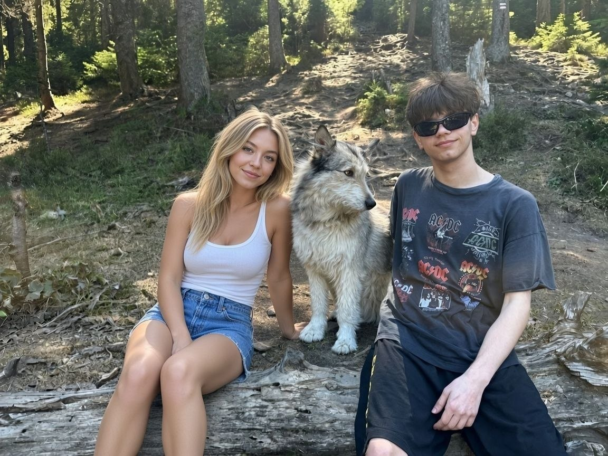
100% REAL (TRUST ME)
FIG. 001 / UNEXPECTED COMPANY™
хто
Тарас Козак
чим займаюсь
Вивчаю програмування
зараз
1-й курс / ІПЗ
01 — АРХІВ
ТРОХИ життя.
Фото, які, можливо, не мали потрапити на офіційний сайт студента. Але вже пізно.
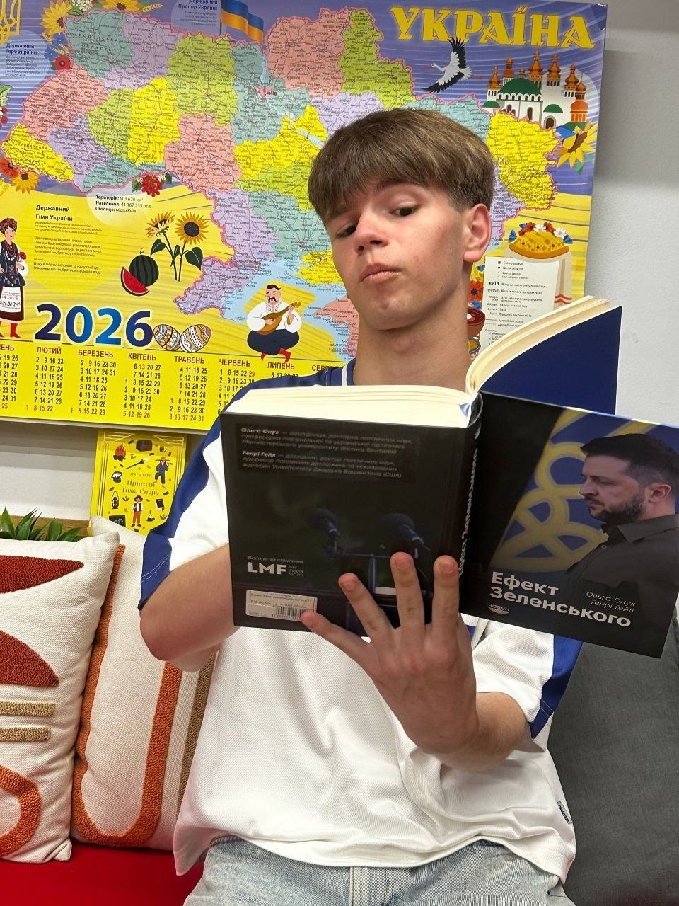
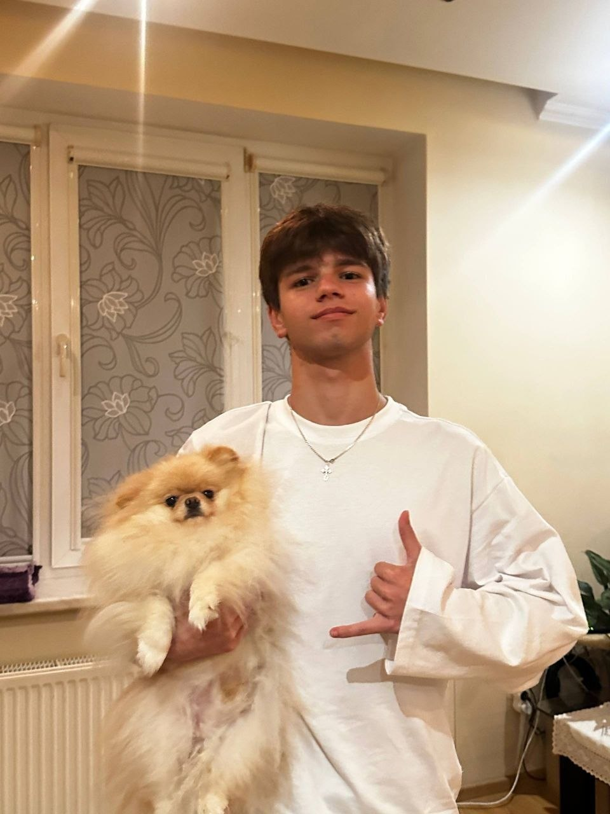
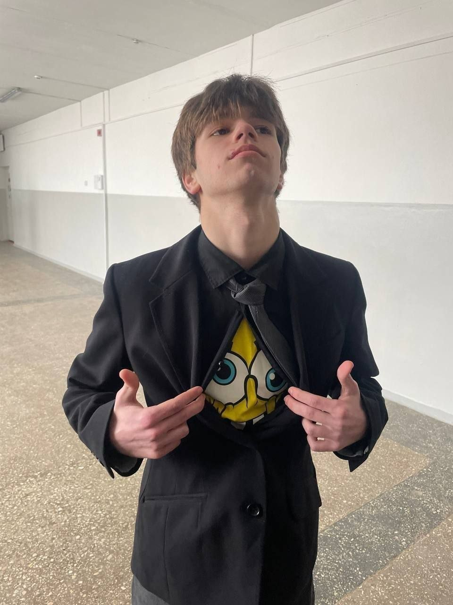
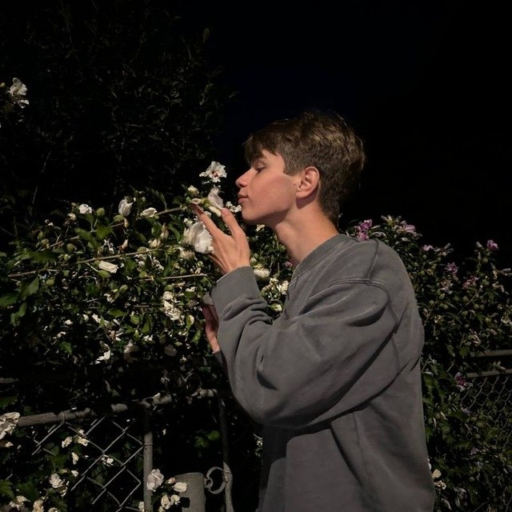
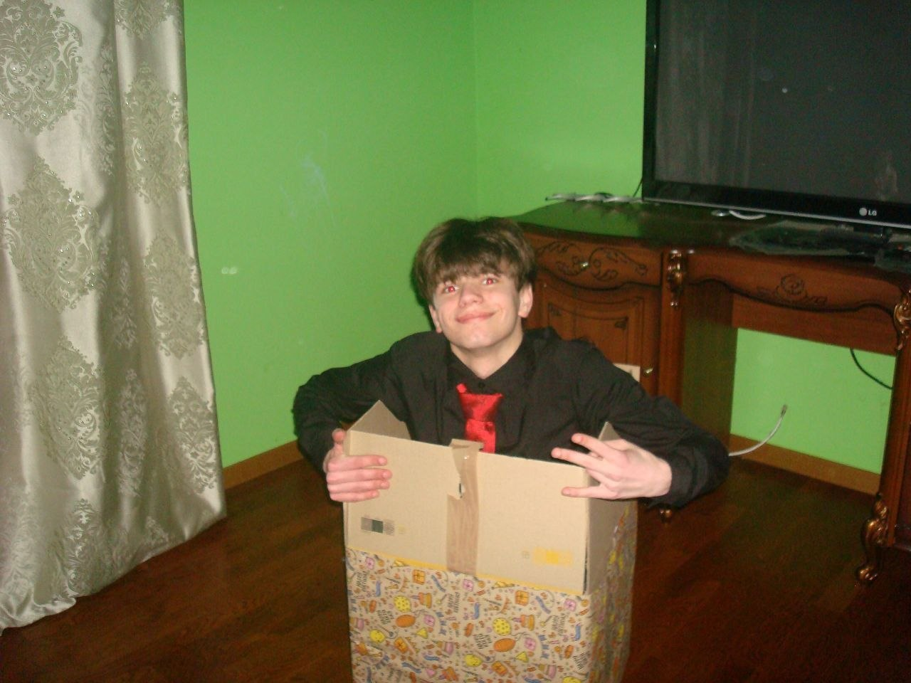
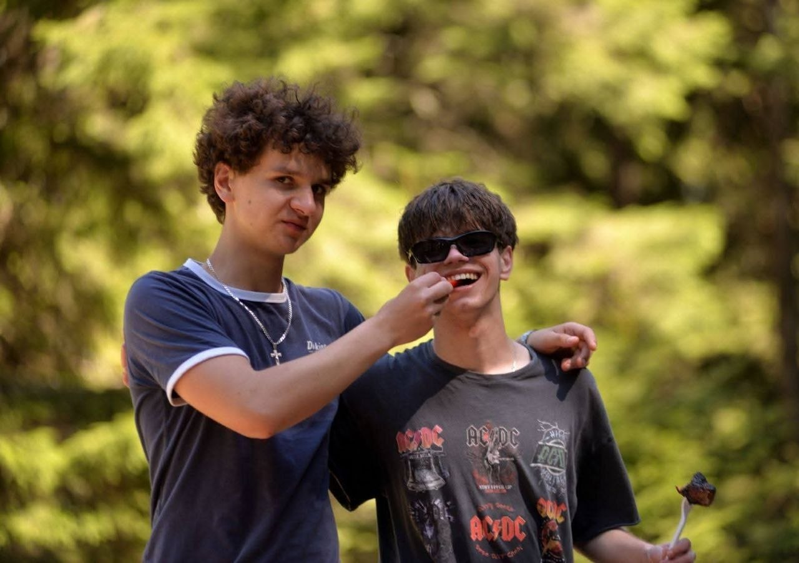
02 — ПОРІВНЯЛЬНИЙ АНАЛІЗ
ЗНАЙДИ 10 ВІДМІННОСТЕЙ.
Дві легендарні фотографії. Одна культова поза.
Різний бюджет — однакова впевненість.
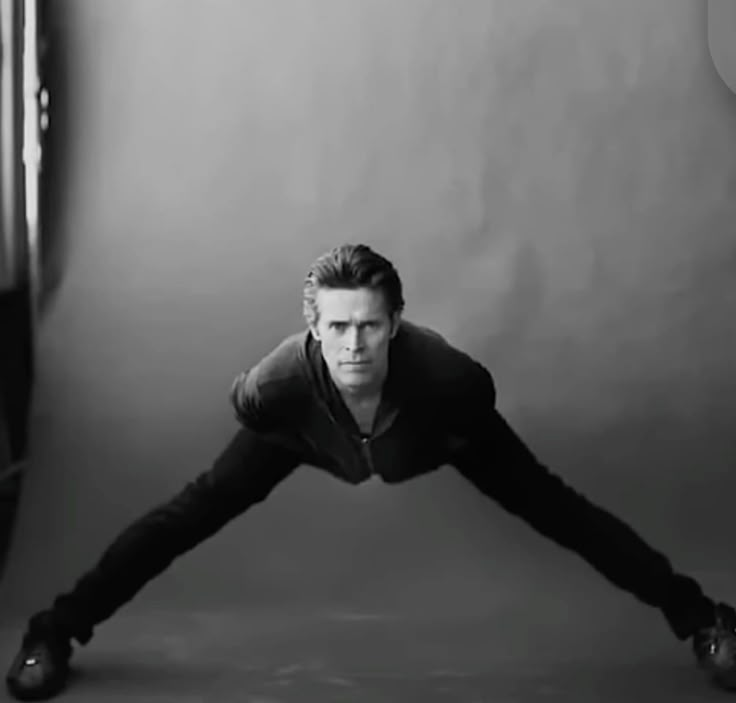
ORIGINAL / WILLEM DAFOE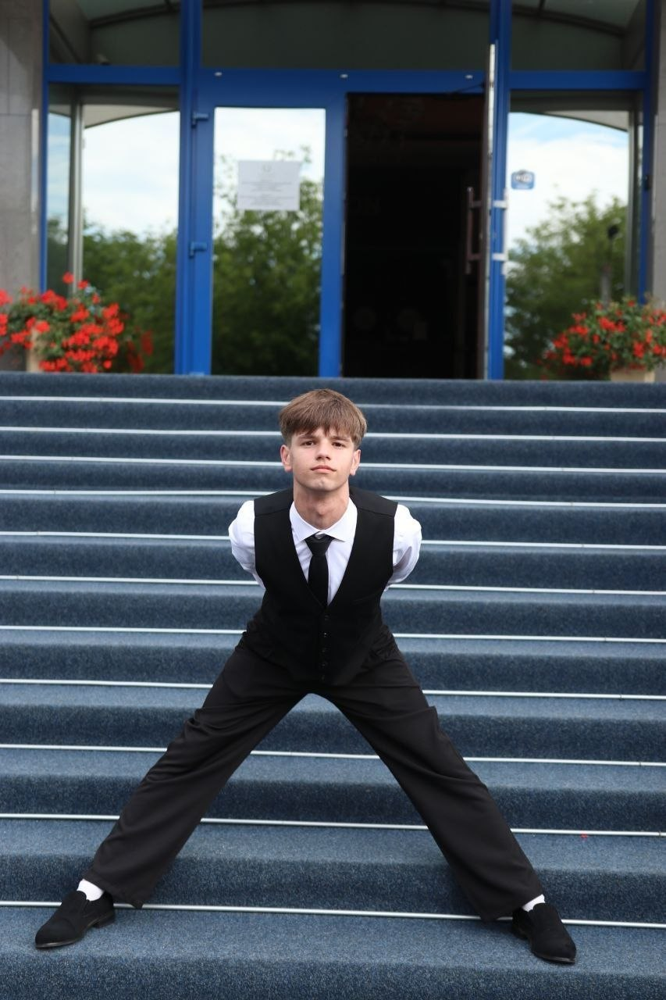
REMAKE / STUDENT EDITION - 202603 — ДАВНІ ЧАСИ
ВСЕ
ПОЧАЛОСЬ
ДЕСЬ ТАК.
Знайшов архівні матеріали. Публікую без погодження з маленькою версією себе.
2009
2026
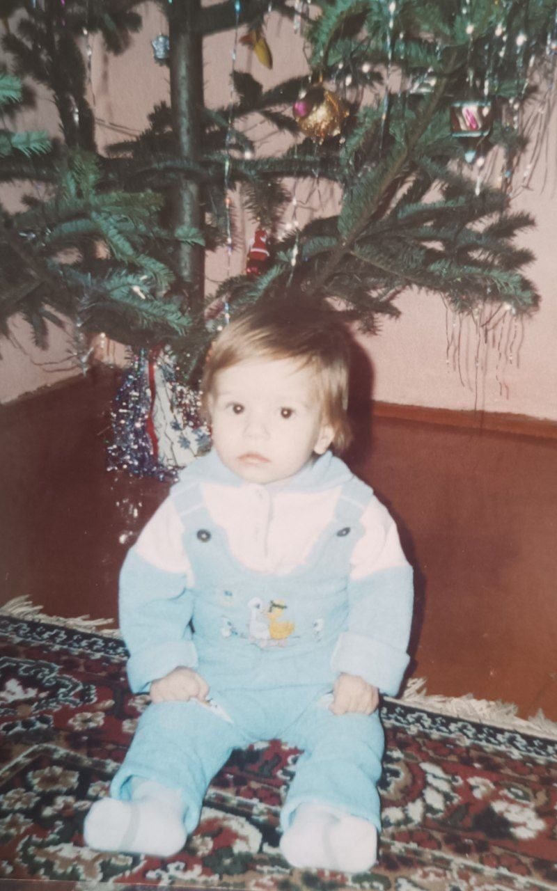
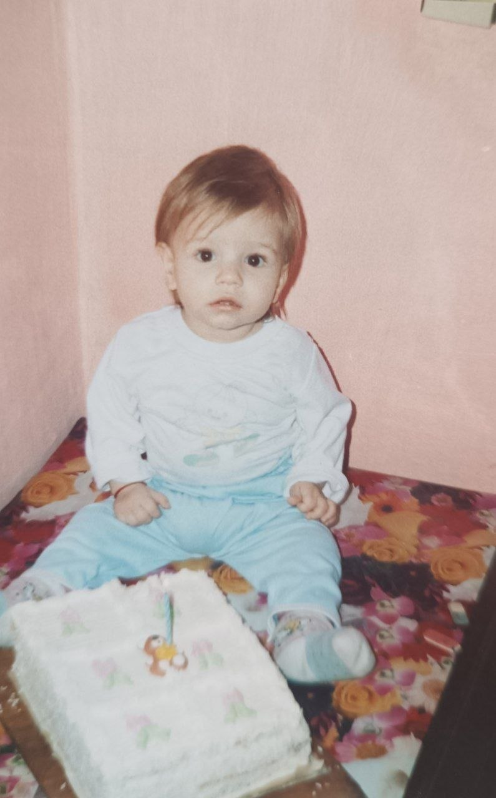